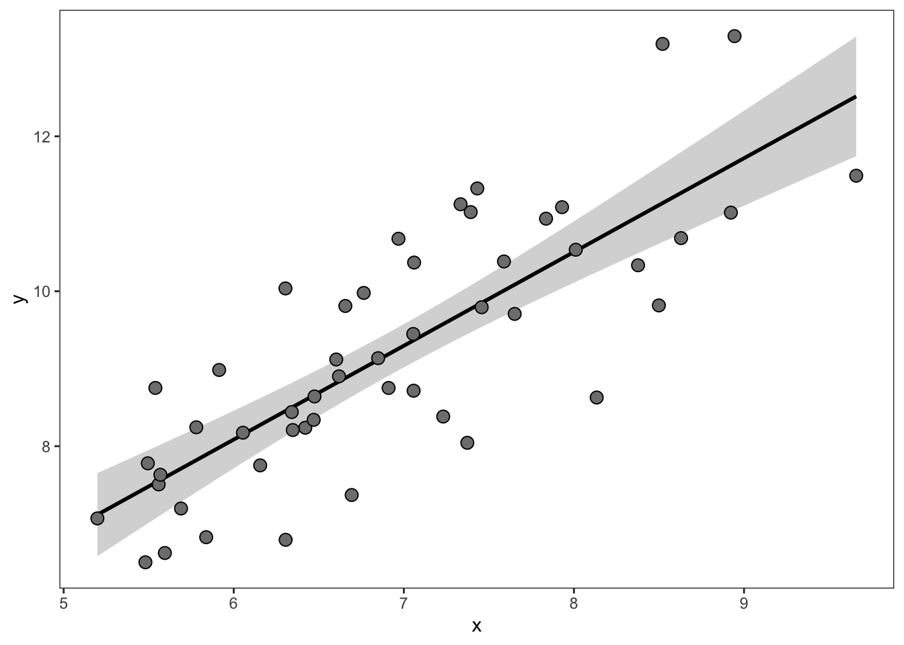
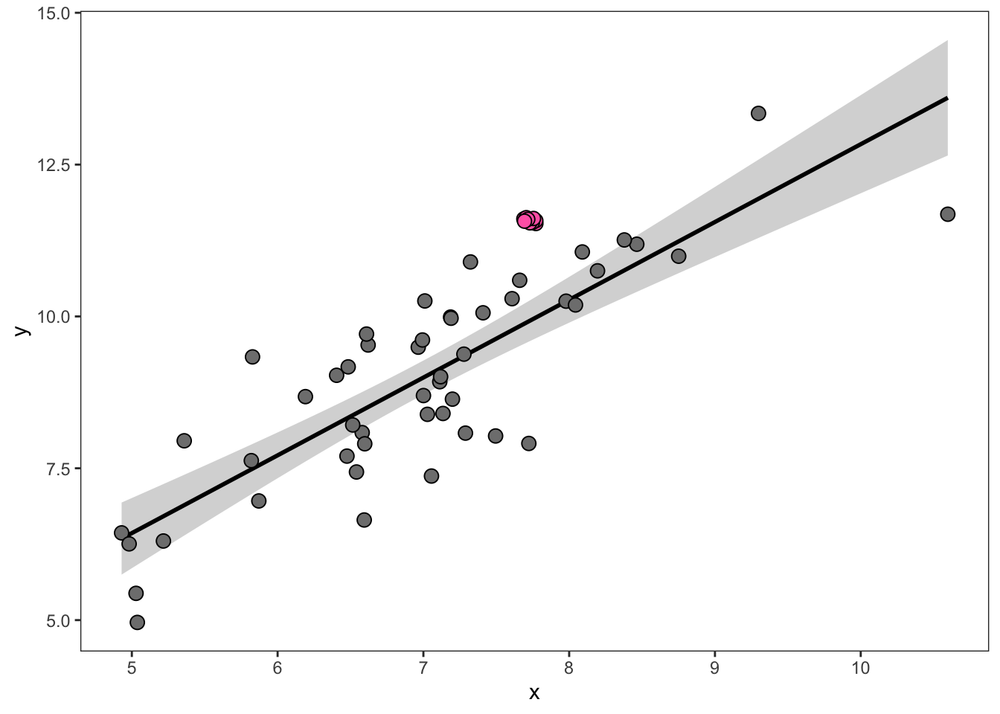
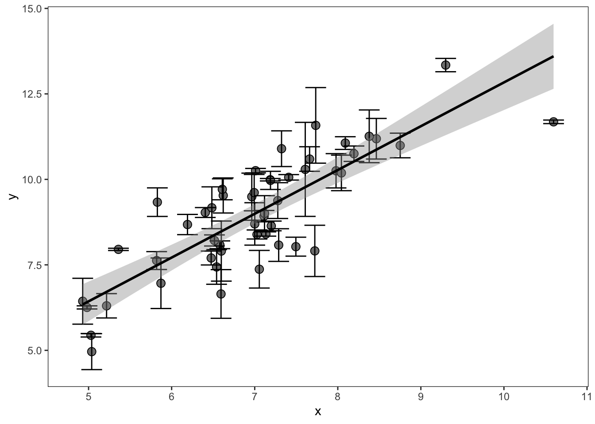
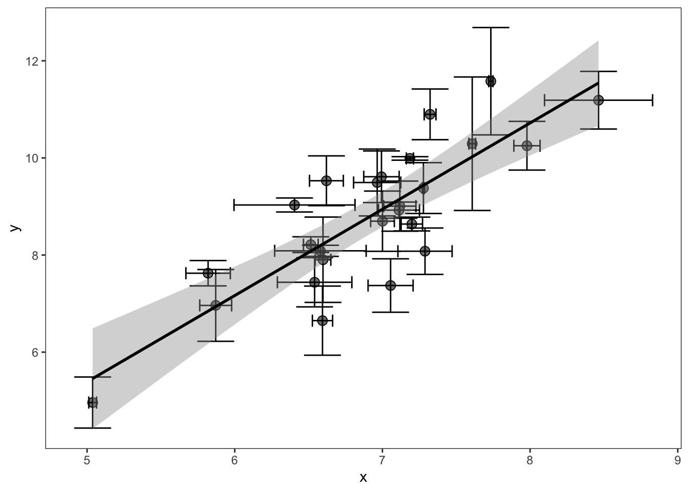
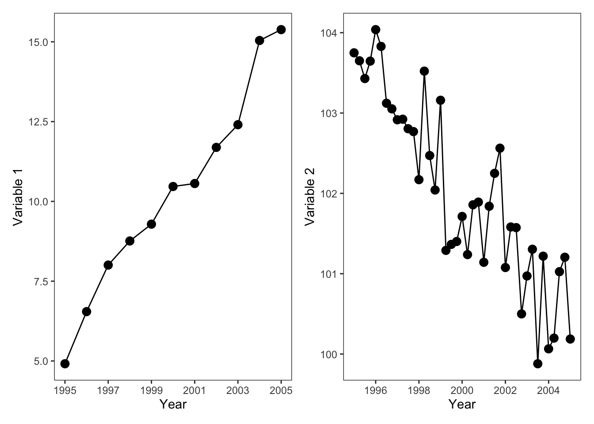
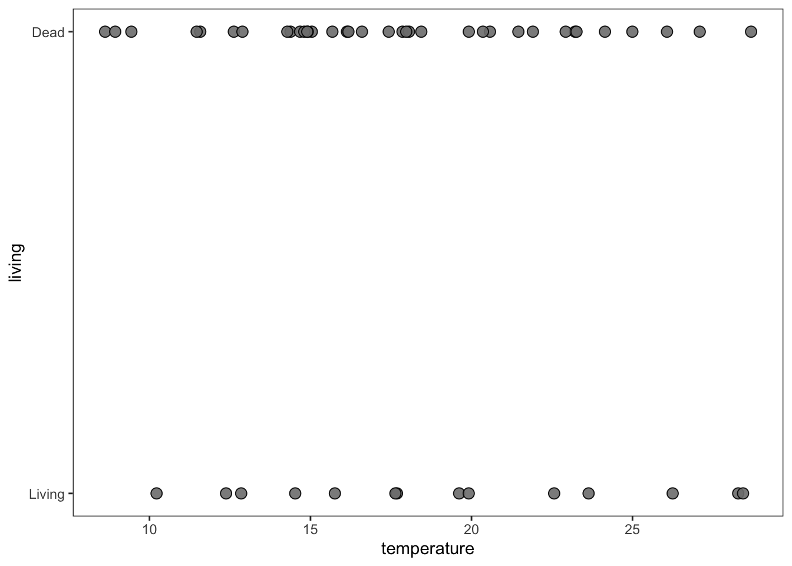
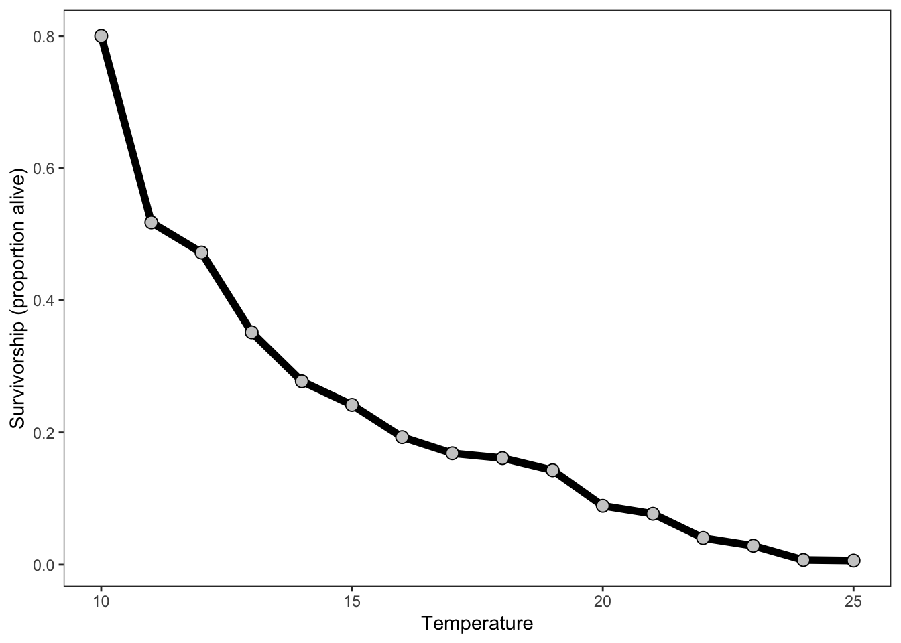
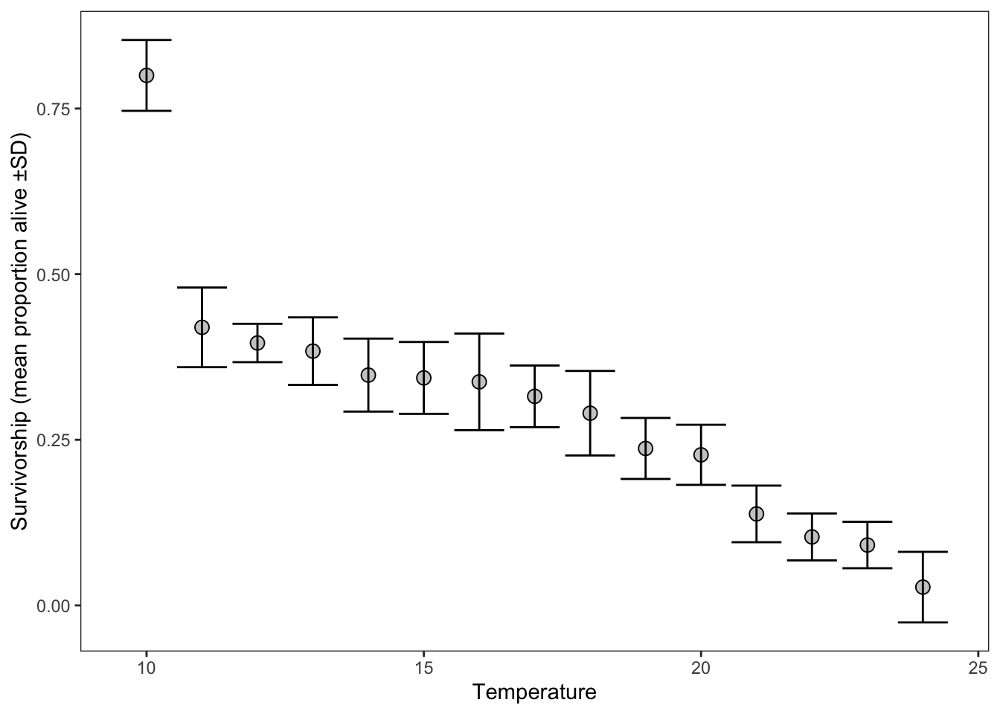

Continuous predictor
Zr: the correlation coefficient
Zr describes the correlation between two continuous variables and is thus an important effect size in the meta-analyst tool kit. Zr type data often takes the form of a scatterplot but other formats exist (e.g., matrices, time series, and model estimates). We’ll go through these examples in turn, along with solutions and limitations for extracting Zr type data.
Simple figures
This is the simplest type of correlation figure. In this case, you’d calibrate the x and y axes and extract each point. Then use cor.test in R to calculate the correlation coefficient:
Then calculate the Zr effect size in escalc:
Overplotting
What if there is an ugly cluster of overlapping points?

In these cases, if the total number of points (N) is reported for the study, then you can duplicate the values of the red points as many times as it takes to match the total sample size. Otherwise, you’ll just have to digitize as many as you can and use an N that is less than the real N (which makes the overall Zr estimate more conservative—e.g., less weight in the model). For example, in the figure above, we could safely eyeball 5 separate points (though in reality there are 12).
Single axis error bars
But what do you do if each point is actually a mean±SD?

If the error bars are only on the y axis this is fairly straightforward but is a bit surprising. In this case, each point actually has an internal-N, which will need to be gleaned from the methods of the paper. After determining this internal-N, extract the means and SDs for each point, and then draw a distribution of internal-N for each point with an appropriate distribution. Here we’ll demonstrate using rnorm to draw normally distributed data for each point.
Warning
If the author-provided data presents standard error (or confidence intervals, etc) instead of standard deviation (which is common), then you must convert these to standard deviation before attempting to reconstruct the underlying distribution. See (sec?) on how to convert from other measures of error to standard deviation.
head(dat) x y sd n
<num> <num> <num> <num>
1: 6.580197 8.086862 0.1137918 10
2: 5.819621 7.625528 0.2610888 10
3: 7.112273 8.924882 0.1666608 10
4: 7.288530 8.078789 0.4775739 10
5: 7.734402 11.579737 1.1054122 10
6: 6.404772 9.030905 0.1443510 10 y x
<num> <num>
1: 8.015352 6.580197
2: 8.011593 6.580197
3: 7.927198 6.580197
4: 8.035034 6.580197
5: 8.037210 6.580197
6: 8.031844 6.580197In this example data, each point had an internal N of 10 measurements. Notice that the original dataset went from 50 rows (individual points) to 500 rows (50 * 10). We then take this expanded dataset and calculate our correlation coefficient and effect size:
yi vi
1 1.1786 0.0020 Pretty neat, right?
If the variable of interest (the response variable y) is not Guassian (e.g., is not normally distributed) but is count (Poisson) or overdispersed count data (negative binomial), etc, then you need to draw the underlying data with the appropriate distribution (e.g., rpois or rnbinom). Doing so requires converting author-provided summary statistics (e.g., the mean and standard deviation in the figure above) to the distribution-specific parameters. See (sec?) where we demonstrate this for negative binomial data.
However, in this example (and the one below) doing this assumes that the internal measurements of each point are at least somewhat independent—at least as independent as the sample N for other studies in your meta-analysis. If the internal measurements of these points are far less independent than in other studies in your meta-analysis then you may want to calculate the correlation just on the point means, and ignore the standard deviation. These decisions require a degree of thoughtfulness and good documentation to ensure consistency, especially when extracting data from a diversity of (messy) ecological studies.
x and y axis error bars
What do you do if there are also error bars on the x axis? For example, if each point is a mean±SD of two different measurements. This is common in field studies, where researchers may sample vegetation at a site and some other factor (e.g., animal activity or soil nutrients) and then present the means±SD of each site in a correlation.

In this case, you’ll do approximately the same thing. Except that you need to choose a single internal-N (for the rows of the expanded x and y variables to align). The most conservative choice would be the N with the lowest sample size between the x and the y variable. In the table below, you’ll see the extracted mean values for the x and y variables (x, y), their standard deviations (x_sd, y_sd), and their internal sample sizes (x_n and y_n), which differ. We’ll first, choose the small sample size and then we’ll draw simulated data.
head(dat) x y y_sd y_n x_sd x_n
<num> <num> <num> <num> <num> <num>
1: 6.580197 8.086862 0.1137918 10 0.3097916 20
2: 5.819621 7.625528 0.2610888 10 0.1503916 20
3: 7.112273 8.924882 0.1666608 10 0.1387269 20
4: 7.288530 8.078789 0.4775739 10 0.1835382 20
5: 7.734402 11.579737 1.1054122 10 0.0142382 20
6: 6.404772 9.030905 0.1443510 10 0.4096762 20# Choose the n with the lowest sample size:
dat[, n := min(c(x_n, y_n))]
xy_expanded <- list()
for(i in 1:nrow(dat)){
xy_expanded[[i]] <- data.table(y = rnorm(mean = dat$y[i],
sd = dat$y_sd[i],
n = dat$n[i]),
x = rnorm(mean = dat$x[i],
sd = dat$x_sd[i],
n = dat$n[i]))
}
xy_expanded <- rbindlist(xy_expanded)
knitr::kable(head(xy_expanded))| y | x |
|---|---|
| 8.037997 | 6.741757 |
| 7.916507 | 7.393582 |
| 8.144775 | 6.378405 |
| 7.951031 | 6.581735 |
| 8.190803 | 6.291490 |
| 8.069009 | 6.508921 |
Our dataset went from 50 rows (one per point in the figure above) to 500 rows, given an internal N of 10 per point.
Now, we calculate the correlation between all of these points and calculate our ‘Zr’ effect size:
Mismatched time series
Sometimes the factors of interest that you want to correlate are in separate graphs as time series. In these cases, it’s just the tedious task of extracting data from each and aligning the two variables.
However, what do you do if the time series are mismatched?
Below, we’ll plot two time series, one for Variable 1 and one for Variable 2:

What is the best way to line up variable 1 and variable 2 to calculate their correlation? rWhile imputing the missing values in the second panel is one possible approach, it is the least conservative. Instead, we recommend taking the average of the most frequently sampled variable to align with the less frequently sampled variable. Alternatively, you can filter the data (after aligning by the shared x-axis) to just those occassions where there is data for both series.
Discrete responses with a continuous predictor
This is a pretty rough example… Imagine you are conducting a meta-analysis concerned with factors driving mortality in some organism. Many of the studies use a discrete predictor, e.g., presence or absence of a driver variable. These types of data are naturally suited for the lnOR or lnRR effect sizes ((sec?)). However, other studies report mortality in relationship to a continuous variable. This is the type of data you would probably analyze with a logistic regression (or binomial GLM)

Depending on your meta-analysis question you may very well want to extract this data and calculate a Zr correlation effect size, which can be converted to lnOR (see (sec?)) and compared to your other lnOR discrete-predictor effect sizes. To do so, extract each point and calculate Zr with the responses as a binary variable of 0 or 1.
Proportion data with a continuous predictor
You can imagine similar challenges where instead of 0 or 1 responses, the authors report % of a population, e.g., similar to a survivorship curve (see (sec?)):
THIS IS ROUGH

You can calculate Zr between the temperature and the proportion alive (the y axis), directly.
However, this ignores the number of individuals in the population and can lead to a mismatch in sample size between this effect size and other effect sizes in your dataset (if those were based on number of individuals, like the figure above (sec?) or lnOR type data).
To deal with this, you likely want to convert this to binary response data for the total number of individuals in each temperature treatment, if this can be reconstructed from author reported summaries. If this figure reflects an experiment where each temperature treatment had 15 individuals, then you can multiply 15 by the proportion at each temperature level, and then expand this dataset to have a 0 or 1 for all 15 individuals per temperature.
Let’s give it a try. dt is a data.table with a column for proportion alive and for temperature. We’ll calculate the number of living and dead individuals, make the dataset long so that these are in one column, and then expand the dataset to be one row per individual. Finally, we’ll create a binary column of 0s and 1s.
temperature proportion_alive number_alive number_dead
<int> <num> <num> <num>
1: 10 0.8000000 12 3
2: 11 0.5177633 7 8
3: 12 0.4722563 7 8
4: 13 0.3515645 5 10
5: 14 0.2773468 4 11
6: 15 0.2416950 3 12 temperature proportion_alive status n_individuals
<int> <num> <fctr> <num>
1: 10 0.8000000 number_alive 12
2: 11 0.5177633 number_alive 7
3: 12 0.4722563 number_alive 7
4: 13 0.3515645 number_alive 5
5: 14 0.2773468 number_alive 4
6: 15 0.2416950 number_alive 3| temperature | proportion_alive | living |
|---|---|---|
| 10 | 0.8 | 1 |
| 10 | 0.8 | 1 |
| 10 | 0.8 | 1 |
| 10 | 0.8 | 1 |
| 10 | 0.8 | 1 |
| 10 | 0.8 | 1 |
We have now expanded this dataset from a single row per temperature treatment to a single row per individual. We can now calculate a correlation coefficient and our Zr effect size. The sample size used in this calculation will reflect the number of individuals.
yi vi
-0.521756780 0.004219409 Remember, the reason we did all of this work was to make this effect size comparable to other effect sizes where sample size was derived from the number of individuals, which we believe is the best way to treat data like this.
Mean±SD proportion data with continuous predictor
Now let’s look at a similar situation, except the figure is presenting mean±SD mortality across separate trials within each temperature treatment.

If we want our effect size to be based on the number of individuals, we need to try to reconstruct the underlying distributions behind each of these trials and then calculate a correlation across those individuals for the binary response of being alive or dead.
To do this, we will do something similar as in sec-xxx. However, we will convert the author-provided mean±SD to their binomial flavors. The binomial distribution is described by the probability (\(p\)) of success across \(t\) trials (usually denoted \(m\)). We can convert mean (\(m\)) and standard deviation (\(sd\)) to \(p\) as follows:
\[ p=1-\frac{sd^2}{m} \] This is confusing because why can’t we just treat the mean proportion as p in the binomial call? sd^2/m produces almost equal survivorship in rbinom…I know I’m doing something wrong
We then also require the number of individuals per trial, which let’s imagine was 15 individuals in 5 independent trials. Note: one rule about binomial data is that sd must be less than the square root of the mean. In R we’ll expand our dataset using rbinom:
head(dt) temperature proportion_alive sd
<int> <num> <num>
1: 10 0.8000000 0.05346933
2: 11 0.4197144 0.06012318
3: 12 0.3961206 0.02896671
4: 13 0.3837917 0.05099862
5: 14 0.3476519 0.05508410
6: 15 0.3434045 0.05422708[1] TRUE# Calculate 'p':
# dt[, p := 1 - (sd^2/proportion_alive)] # I don't think this is correct...Confused. Using proportion_alive for now
# Now draw in a loop:
y_expanded <- list()
for(i in 1:nrow(dt)){
y_expanded[[i]] <- data.table(n_living = rbinom(p = dt$proportion_alive[i],
size = 15,
n = 5),
temperature = dt$temperature[i])
}
y_expanded <- rbindlist(y_expanded)
knitr::kable(head(y_expanded))| n_living | temperature |
|---|---|
| 13 | 10 |
| 12 | 10 |
| 13 | 10 |
| 14 | 10 |
| 9 | 10 |
| 5 | 11 |
As with sec-XXX, you can then expand this dataset from a row per trial to become a row per individual.
y_expanded[, n_dead := as.integer(15 - n_living)]
y_expanded.mlt <- melt(y_expanded,
measure.vars = c("n_living", "n_dead"),
variable.name = "status",
value.name = "n_individuals")
final_dat <- y_expanded.mlt[rep(seq_len(.N), n_individuals), ]
final_dat[, living := ifelse(status == "n_living", 1, 0)]
final_dat <- final_dat[, .(temperature, living)]
nrow(final_dat)[1] 1125| temperature | living |
|---|---|
| 10 | 1 |
| 10 | 1 |
| 10 | 1 |
| 10 | 1 |
| 10 | 1 |
| 10 | 1 |
This final dataset has 1,350 rows, one for individual, and the necessary ingredients for calculating Zr. Calculating Zr directly from the mean survivorship across trials would treat the number of temperature treatments as sample size, instead of the number of individuals across all trials, which would give it considerably higher sampling variance and much lower weight in your meta-analytic models.
Matrices
Some types of correlations are more complicated because they are based on pairwise matrices that describe relationships between individuals. As such, each value is not independent because the same individuals engaged with other individuals. For instance, correlations between pair-wise behaviors. An example would be the relationship between grooming behavior and defense, which was meta-analyzed by Schino (2007, https://doi.org/10.1093/beheco/arl045). Is grooming adaptive because it leads to mutual defense with grooming partners?
With data like this, you might have a matrix of grooming between individuals:
| Sally | James | Bart | Sergeant Brown | |
|---|---|---|---|---|
| Sally | NA | 2.915332 | 78.86997 | 86.16433 |
| James | NA | NA | 10.57303 | 52.62949 |
| Bart | NA | NA | NA | 71.45777 |
| Sergeant Brown | NA | NA | NA | NA |
Associated with a matrix of defending each other from adversaries:
| Sally | James | Bart | Sergeant Brown | |
|---|---|---|---|---|
| Sally | NA | 57.86469 | 14.73556 | 82.74392 |
| James | NA | NA | 17.37874 | 44.65180 |
| Bart | NA | NA | NA | 59.11932 |
| Sergeant Brown | NA | NA | NA | NA |
First, you need to melt these matrices into vectors:
Since the pairs are aligned you can then calculate Kendall’s correlation coefficient:
res <- cor.test(mat1$value, mat2$value, method = "kendall")
res
Kendall's rank correlation tau
data: mat1$value and mat2$value
T = 9, p-value = 0.7194
alternative hypothesis: true tau is not equal to 0
sample estimates:
tau
0.2 And now you’re free to calculate ZCOR:
escalc(measure = "ZCOR",
ri = res$estimate,
ni = nrow(mat1))
yi vi
1 0.2027 0.3333 IS THIS CORRECT???
Model estimates
….
NOTES:
“For meta-analyses involving multiple (dependent) correlation coefficients extracted from the same sample, see also the rcalc function.” <- from escalc documentation
rcalc: “Function to calculate the variance-covariance matrix of correlation coefficients computed based on the same sample of subjects.” Ooof. This is another dimension of complexity….